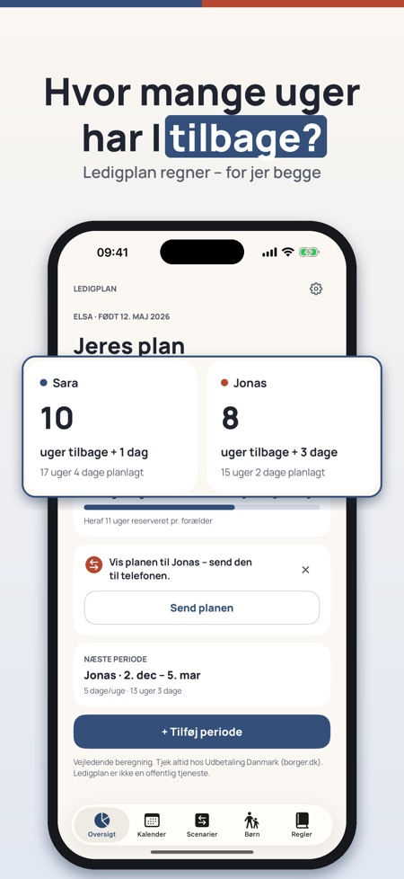
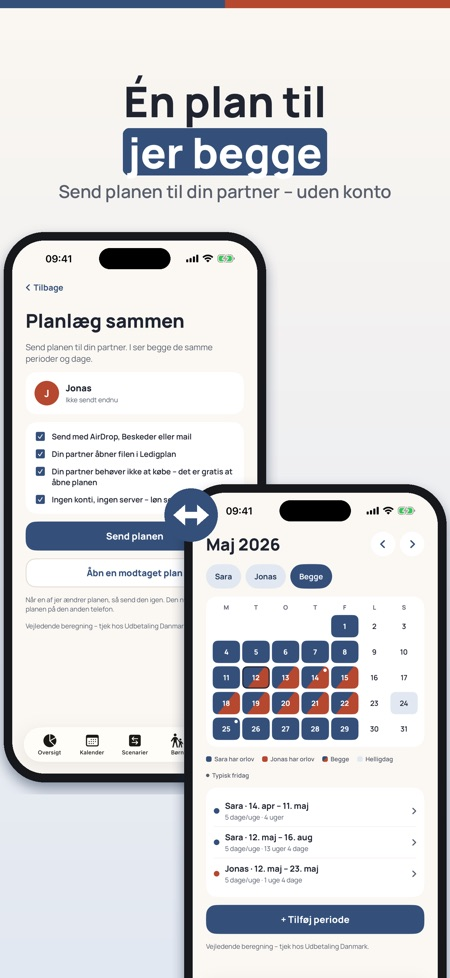
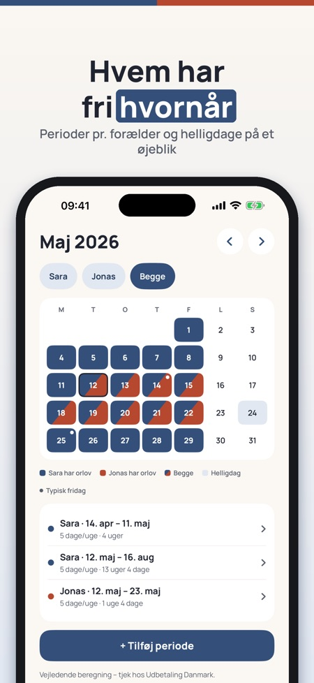

Beregn ugerne, planlæg sammen. Planlæg 2027 nu: læg orloven ind før jul og se de uger, I har tilbage – for jer begge.



Hvor mange uger har I tilbage – og hvem tager hvad? Ledigplan regner for jer begge, viser orloven i en fælles kalender og lader jer sammenligne planer, før I beslutter jer. Intet login, ingen konto.
Myndighedernes værktøjer planlægger én forælder ad gangen. Ledigplan er én plan til jer begge.
Oversigt, kalender og regler for ét barn og én plan kan bruges uden køb. Ledigplan Plus er et engangskøb, der låser op for deling med partner, scenarier, eksport og flere børn. Intet abonnement.
Beregningen er vejledende. Ledigplan er uafhængig og ikke tilknyttet Udbetaling Danmark, Försäkringskassan, NAV eller Kela. Ansøgningen sender du altid til myndigheden.